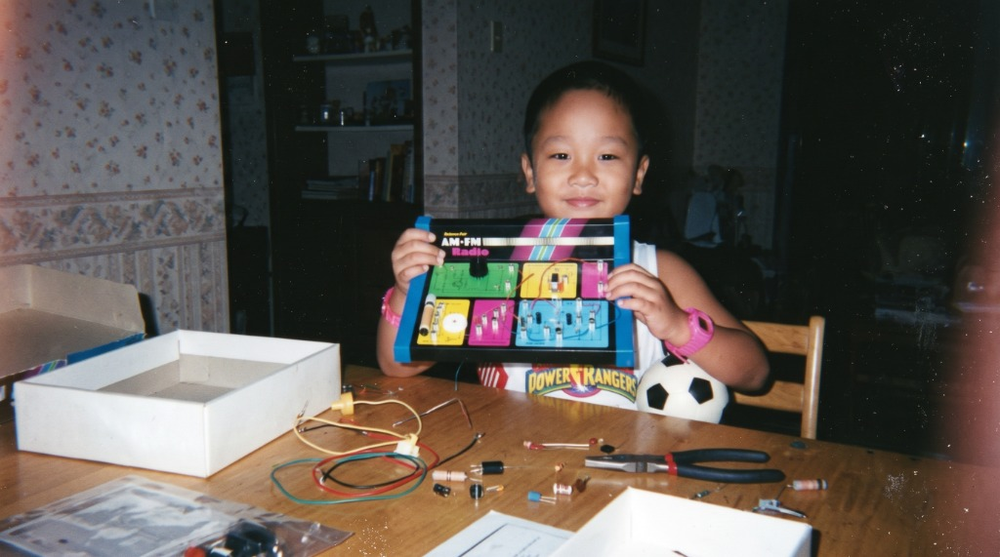
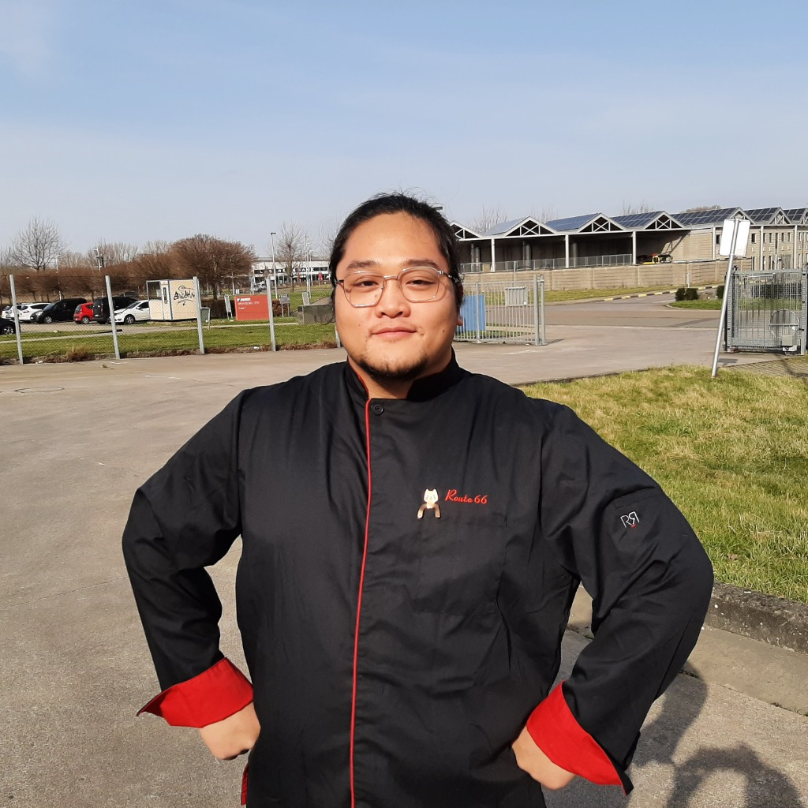
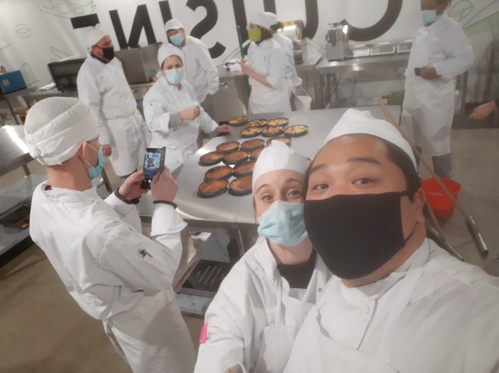
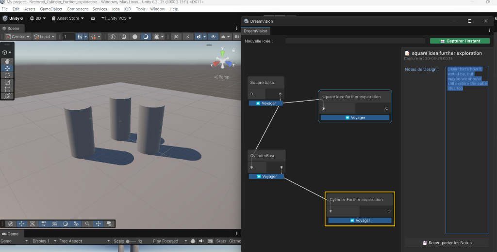
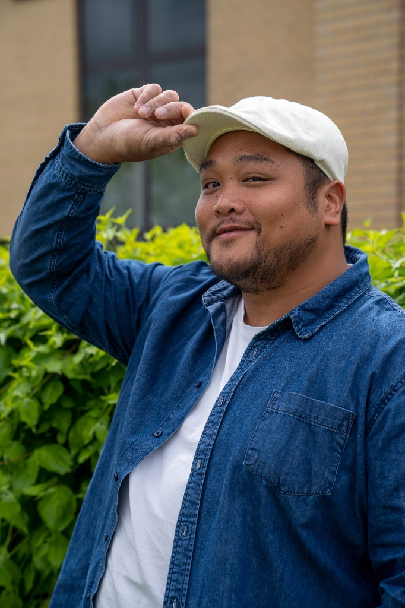
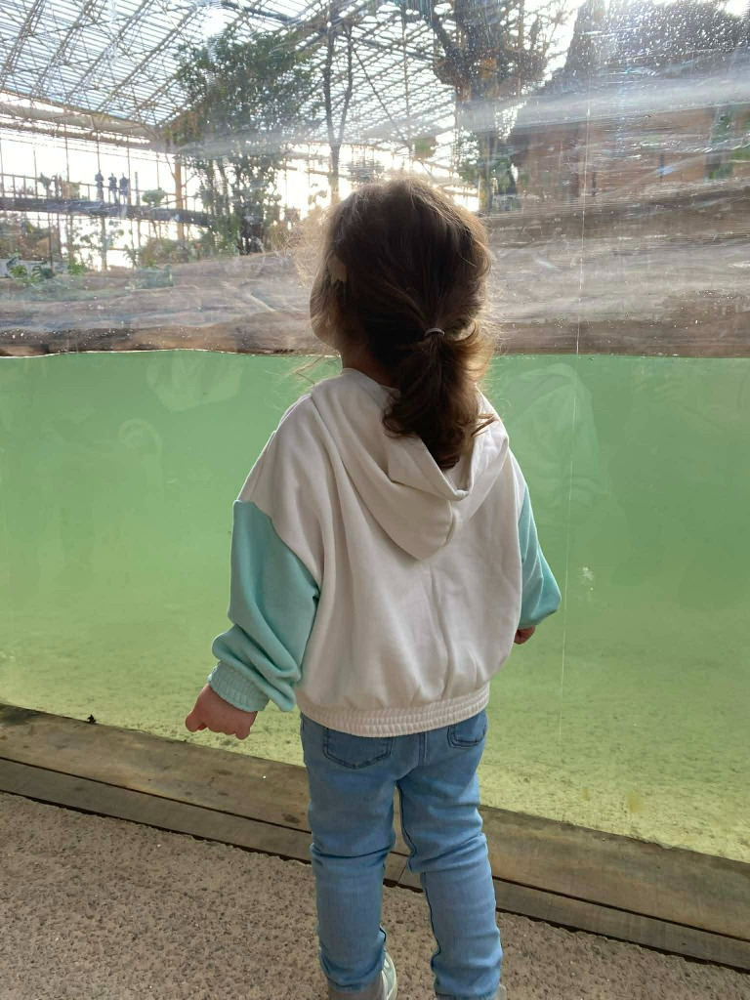

Intégration, ERP & développement :
Analyse Business et Fonctionnelle.
Professionnel IT polyvalent avec expérience en intégration de systèmes, support utilisateurs, ERP, analyse et développement, aujourd'hui en montée en compétence technique.
« Lier Humains et Systèmes à travers la technologie »
Mon Chemin de Traverse
Mon histoire avec la tech n'a pas commencé dans un amphithéâtre d'informatique. Elle a commencé en 1998, manette de NES en main à 6 ans, avec la certitude intime que le jeu vidéo ferait toujours partie de ma vie. Elle a continué avec un vieux kit radio retapé avec mon père déniché en brocante, puis vers 12 ans, les mains dans le boîtier à monter le premier PC d'un ami.



L'étincelle était là, mais la vie prend parfois des détours nécessaires. J'ai étudié les langues et la traduction, monté des machines la nuit en dévorant tout ce qui touchait au code et au design, avant d'enfiler un tablier de cuisinier pour soutenir ma famille. En cuisine, j'ai appris le coup de feu, la rigueur du geste et le sens du collectif. Mais au fond de moi, je savais que je passais à côté de mon véritable atelier.
De retour dans les bureaux, je me suis agrippé à chaque opportunité tech et chaque projet IT qui passait pour apprendre sur le tas, accumuler de l'expérience et faire le pont entre l'humain et les systèmes.


En 2026, suite à un licenciement, j'ai choisi de transformer cette rupture en alignement. À 33 ans, j'ai décidé d'écouter enfin mon instinct : rejoindre Technocité pour me former solidement au développement et au game design, embrasser ce qui me passionne viscéralement et m'épanouir pleinement dans ce métier.
« Pour être aligné avec moi-même, prêt à relever des défis plus grands que moi… et pour que ma fille puisse grandir en étant fière de son père. »

Tools & Technical Stack
Technologies and technical workflows used across development.
Outils
- Unity • Unreal Engine
- Visual Studio • Rider
- Git • GitHub • CI/CD
- Jira • HacknPlan
- Progiciels ERP (SAP SD • Odoo)
- Suite Microsoft (Office 365)
Compétences
- Programmation Gameplay • Architecture C#
- Game Design • Mécaniques de jeu
- Représentation BPML / BPMN
- Analyse Business • Recueil de User Stories
- Gestion de Sprints • Méthodologie Agile
- Utilisation responsable de l'IA
- Audit interne
- Intégration Systèmes IT • Résolution de problèmes
- Communication efficace • Didactique
- Pédagogie • Travail d'équipe • Leadership
Langues
- Français
- Anglais
- Néerlandais
- C#
- JavaScript
- HTML5 • CSS3
Academic Background
Intensive curriculum in C#, Unity engine architecture, 3D math, and real-time physics. Mastered the end-to-end application development lifecycle through agile methodologies (Scrum, sprint management) down to playable prototype delivery.
Systems modeling, data flow diagrams, stakeholder translation, and technical requirements documentation.
Pedagogy, German & English linguistics, cross-cultural communication and didactic methodology.
Professional Journey & Career Milestones
From enterprise systems integration to Creative Technology and Game Development.
Customer Relationship Manager / Business Analyst
- Key User — Intégration des modules SD et FI/CO de SAP.
- Fait le lien entre les utilisateurs et l’équipe SAP, recueillant et traduisant les besoins opérationnels en spécifications fonctionnelles et cas de test.
- Rédaction de user stories.
- Conçu et exécuté des scénarios de tests fonctionnels pour l’environnement QAS.
- Accompagne et forme les utilisateurs à l’adoption des nouvelles solutions digitales, favorisant la montée en compétence et la satisfaction des équipes.
Spécialiste de planification de transport
- Soutenu l’intégration d’un nouveau système de gestion d’entrepôt (WMS) en assurant la coordination entre les équipes logistiques, IT et prestataires externes.
- Modélisé et documenté les flux logistiques avec BPMN, apportant une meilleure visibilité sur les points de friction et favorisant l’automatisation des processus.
Coordinator in Sales & Logistics / Odoo ERP Integration
- Contribué au déploiement de l’ERP Odoo (CRM, Inventaire et production).
- Recueil d’user stories pour préparer à l’implémentation.
- Participé à la migration de la base de données et aux tests fonctionnels.
- Accompagné le changement, migré la base de données clients et articles (produits, étiquettes, nomenclatures).
Restaurant Manager & Operations Lead
- Direction opérationnelle complète, gestion d'équipe.
- Négociation fournisseurs.
- Gestion des stocks.
- Satisfaction client sous forte cadence.
Let's build something engaging
Have an idea for a game, need custom software tools, or want to collaborate on Magible Studio? Feel free to reach out.